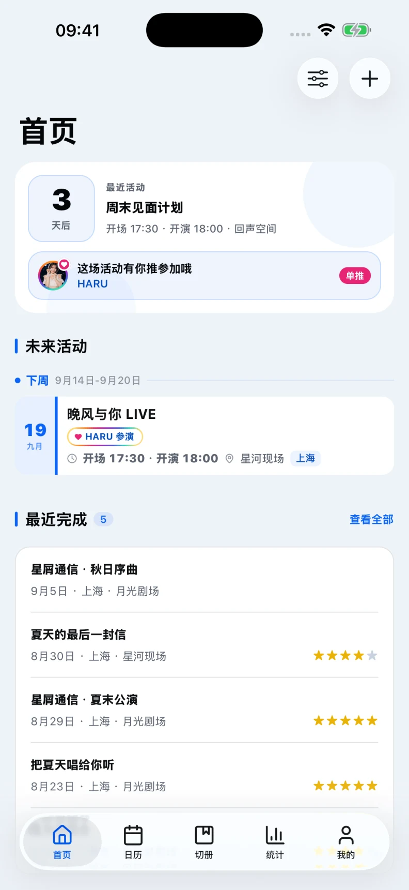
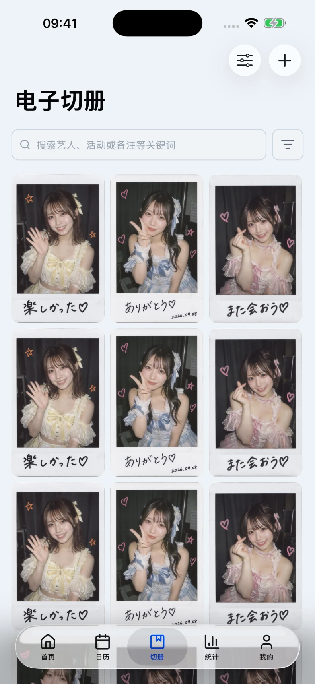
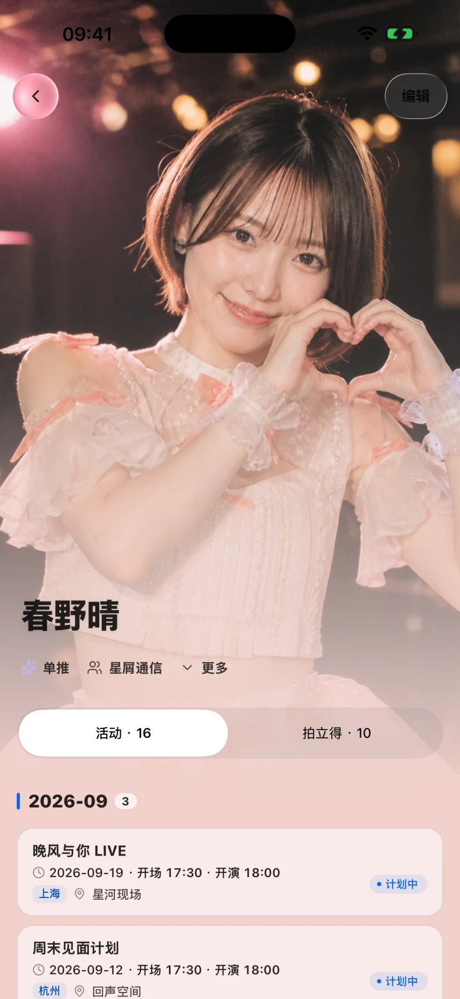
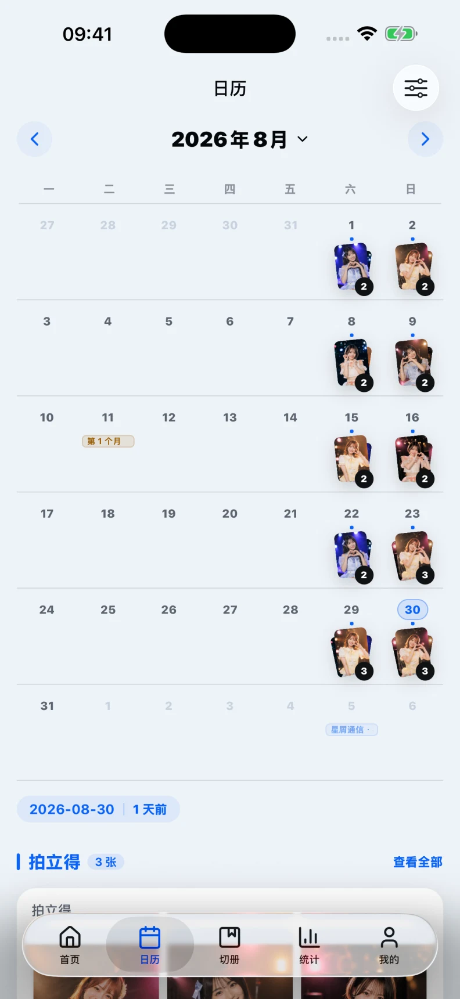
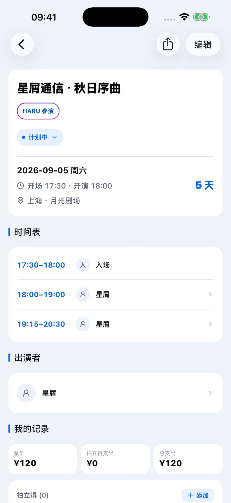

把喜欢的现场，
留在自己的记录里。
从期待下一场演出，到收好每一张拍立得。
ota log 帮你记录与偶像见面的日子，
也留住那些舍不得忘记的小事。
iOS & Android 无需注册 本地存储


为每一次奔赴，也为每一次回看。
实际 App 界面 · 虚构演示数据从下一场期待，
到往后的回忆。
演出、艺人和拍立得，本来就是同一个故事。
把它们放在一起，记录就有了来龙去脉。
随时翻开，你的收藏。
从一位喜欢的艺人，到一整年的现场。每一种回忆，都有自己的位置。

关于喜欢的那个人
艺人、团体、单推，以及每一次见面。

有些日子，自带画面
翻过日历，也翻过那天留下的拍立得。

把一场演出记完整
从入场时间，到散场后的花费与记录。
以上为真实 iOS App 截图，使用虚构人物与演示记录。Android 的系统控件与布局细节可能不同。
那些小事，也照顾到了。
给拍立得加一点心情
用贴纸相机整理照片，留下属于自己的风格。
在桌面上，等下一次见面
iOS 小组件与实时活动，让演出信息离你更近。
旧记录，也能接着写
通过支持的数据导入工具，继续整理已有收藏。
- 无需注册
- 打开 App，就能开始第一条记录。
- 本地存储
- 核心记录保存在当前设备，不会自动同步到其他设备。
- 完整备份
- 换机前导出备份，在新设备恢复。记得定期备份。
出发前，你可能还想知道。
iPhone 和 Android 都能用吗？
可以。iOS 可从 App Store 下载，Android 通过 APK 安装。部分系统扩展（如 iOS 小组件和实时活动）仅在对应平台提供。
没有拍立得照片，也可以记录吗？
可以。电子切册支持无图记录，可以先记下艺人、活动、数量、规格或价格，之后再补照片。
更换手机，记录怎么办？
请先在旧设备的“设置 → 备份和恢复”中生成并保存完整备份，再在新设备恢复。数据不会自动云同步，请在卸载或换机前确认备份已保存。
遇到问题，在哪里反馈？
可以通过技术支持页面联系开发者。反馈时请注明设备、系统版本和操作步骤，不要附上私人记录或备份文件。
准备好下一次见面了吗？
从第一场演出、第一张拍立得开始。
慢慢收好，属于你的现场。
Android 下载入口暂未开放，请稍后再来。